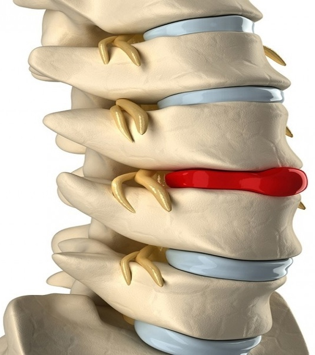
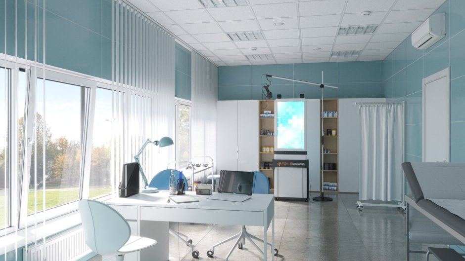
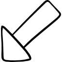

это выпячивание (экструзия) ядра межпозвоночного диска в позвоночный канал в результате нарушения целостности фиброзного кольца.
Наиболее часто встречаются грыжи межпозвонковых дисков пояснично-крестцового отдела позвоночника (150 случаев на 100 000 населения в год), значительно реже наблюдаются грыжи в шейном отделе позвоночника, наиболее редки — в грудном отделе.
Грыжи относительно редко требуют хирургического вмешательства, тем не менее в США ежегодно проводится более 200 тысяч, а в Германии — 20 тысяч вмешательств. В 48 % случаев грыжи локализуются на уровне L5-S1 пояснично-крестцового отдела, в 46 % случаев — на уровне L4-L5, остальные 6 % — на других уровнях или на нескольких уровнях пояснично-крестцового отдела. Менее тяжёлое состояние — выпячивание ядра межпозвоночного диска без разрыва фиброзного кольца, называется протрузией.

Причины
Дегенерация диска в настоящее время является основным фактором, который рассматривается как причина грыжеобразования. Но провоцирующие факторы дегенерации диска и дальнейшего грыжеобразования полностью не изучены. Данный процесс обусловлен многофакторной этиологией. Выделяют 3 фактора: генетический, нарушение метаболизма или питания, и механический, обусловленный постоянным микротравмированием и постепенным разрушением структур межпозвонкового диска.
Однако не только генетические эндогенные факторы, но и экзогенные влияния определяют характер и скорость дегенеративных изменений диска. Физические нагрузки в виде подъёма тяжестей, торсионных нагрузок, то есть подъём тяжести в сочетании со скручиванием, или «гольфинг», вождение автомобиля определены как основные факторы риска дисковой дегенерации и последующего грыжеобразования.
У взрослых людей межпозвонковый диск не имеет кровоснабжения, и его питание происходит осмотически, то есть при движении, например, при ходьбе. Соответственно, при малоподвижном образе жизни питания диску недостаточно, и со временем он теряет влагу и становится хрупким. Также на эту хрупкость влияет наследственность.
Также существует триггерная теория грыжеобразования. Согласно ей первопричиной являются сокращённые мышцы, которые, как тиски сжимают межпозвонковый диск, и тем самым мешают нормальному его питанию. Следствием является постепенная потеря влаги диском и его хрупкость.
Вместе с тем явление выпячивания диска является физиологичным при малых его проявлениях. Именно по этой причине человек утром имеет больший рост, чем вечером.
Клинические проявления
Грыжи дисков в большинстве возникают у людей трудоспособного возраста. Они часто сопровождаются неврологическими нарушениями, обусловленные компрессией спинномозгового корешка. Образованию грыжи диска обычно предшествуют эпизоды поясничных болей, часто связанных с физическими нагрузками. При неврологическом обследовании можно предположительно сориентироваться в отношении локализации компримирующего процесса по длине и поперечнику позвоночного канала, оценивая всем известную топику неврологических нарушений.
Обследование
Методом выбора диагностики грыж межпозвонковых дисков в настоящее время является магнитно-резонансная томография (МРТ) или мультиспиральная компьютерная томография (МСКТ). При необходимости проводится неинвазивная МР-миелография или инвазивная КТ-миелография.
Лечение
В большинстве случаев симптомы межпозвонковой грыжи стихают в течение нескольких недель, что может быть обусловлено их спонтанной резорбцией. В последующем наступает ремиссия и хирургическое вмешательство не требуется. Исследование Vroomen и коллег (2002) показало, что у 73 % пациентов выраженное улучшение наступало без хирургического вмешательства в течение 12 недель после появления симптомов заболевания.
Однако сам факт облегчения состояния, при наличии грыжи, не исключает факта образования последствий по типу корешкового синдрома (травмы и воспаления нервных корешков спинного мозга)
Хирургическое лечение межпозвоночной грыжи должно рассматриваться только как крайняя мера и только после безуспешных попыток консервативного лечения, которое не смогло взять под контроль болевой синдром.
Основным методом консервативного лечения межпозвонковой грыжи является противовоспалительная терапия с использованием противовоспалительных средств (как НПВС, так и гормональных), миорелаксантов.
Основная задача данного лечения состоит в снижении воспаления в месте возникновения грыжи с целью меньшего её воздействия на корешок. С этой же целью применяются инъекции в область воспалительного процесса — блокады. Блокады делятся на паравертебральные (в мышцы, разгибающие туловище) и эпидуральные (непосредственно к самой грыже). Эпидуральные блокады являются сложной медицинской процедурой и требуют от специалиста высокой квалификации.
Последний Кохрановский обзор эпидуральных кортикостероидных блокад при боли в спине и радикулопатии показал, что разница (в чём?) между блокадой с активным веществом и плацебо была менее 10 % и не может считаться клинически значимой. Авторы рекомендовали пересмотреть клинические рекомендации по использованию кортикостероидных препаратов (блокад) при данной патологии и применять их реже.[3]
После стихания обострения воспалительный процесс продолжается и благодаря ему происходит лизис, грыжа уменьшается в размерах. Процесс уменьшения размеров межпозвонковой грыжи называется резорбцией[4]. Иммунные клетки распознают выпучившееся пульпозное ядро как чужеродное и уничтожают его, однако это связано с воспалительным отёком и при новообразовавшейся грыже он создаёт дополнительное давление на корешок.[5]
Кроме медикаментозной терапии, значительную и зачастую решающую роль играет лечебная физкультура.

Показания для хирургического лечения грыж межпозвонкового диска

Показания в хирургическом вмешательстве отсутствуют в том случае, если болевой синдром поддаётся консервативному лечению.
Относительные показания имеются в случае неэффективности консервативного лечения, либо с целью достижения выздоровления в кратчайшие сроки.
Абсолютные показания имеются при критических нарушениях, связанных с пережатием корешков, вызывающих недержание мочи и кала, нарушением потенции и прочими. Определённую роль играет время от появления самого пережатия до проведения операции, в связи с возможными нарушениями функциональности пережатого нерва в будущем.
Данное разделение носит отчасти условный характер, так как каждый случай индивидуален и требует индивидуального подхода в лечении.
До недавнего времени применялось удаление грыжи межпозвонкового диска путём ламинэктомии соответствующего уровня. С появления хирургического микроскопа стало возможным уменьшить травму операционного доступа и производить удаление грыжи диска через меньшее трепанационное окно, так появился метод интраламинарного микрохирургического удаления грыжи диска, который используется и по сей день, являясь «золотым стандартом» хирургического лечения грыж межпозвонковых дисков. Дальнейшее развитие методов идёт по пути уменьшения хирургической травмы, и это развитие неотрывно связано с развитием медицинской техники и оптики. В настоящее время широко применяется микрохирургическое удаление и появилось множество вариантов эндоскопического удаления грыжевого выпячивания.